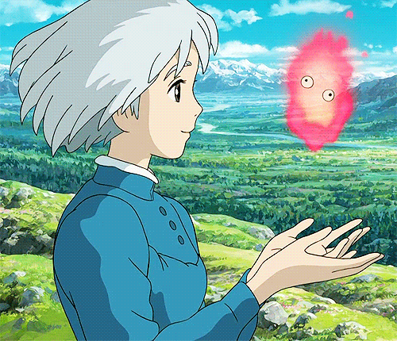
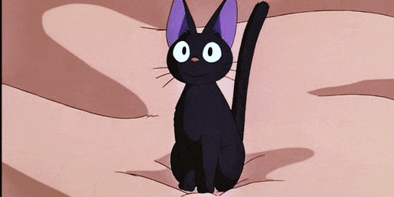
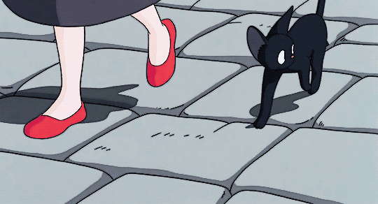
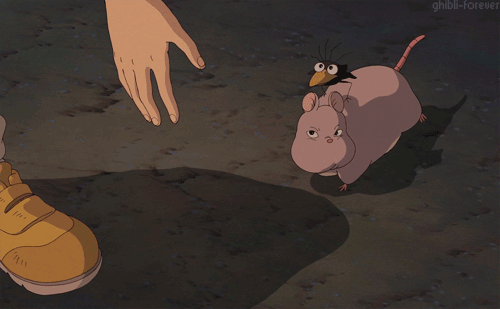
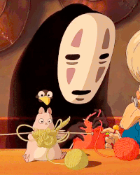

Olá! Meu nome é Maria Clara Batista, mas todo mundo me chama de Batika. Nasci em 11/04/2008, no interior de Minas Gerais, Brasil. Comecei a estudar programação aos 13 anos de idade, e decidi que seria minha carreira com 15 anos. Tenho interesse em muitas áreas, mas minha favorita é o desenvolvimento full-stack, porque ele abrange todo o necessário para a construção de páginas web. Meu objetivo, com a programação, é montar uma carreira sólida e auxiliar a sociedade com minhas atuações. O maior desafio que enfrento, como iniciante, é encontrar contatos e oportunidades, mas esforço e determinação irão me auxiliar a vencer esse processo. Meus hobbies são ler, principalmente romance, e assistir animes e doramas. Gosto muito de gatos, jogos com uma lore bem desenvolvida, rock e cultura oriental.




